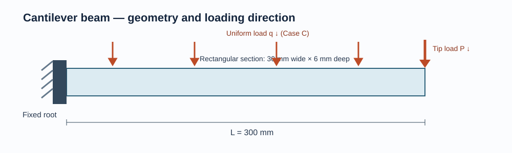
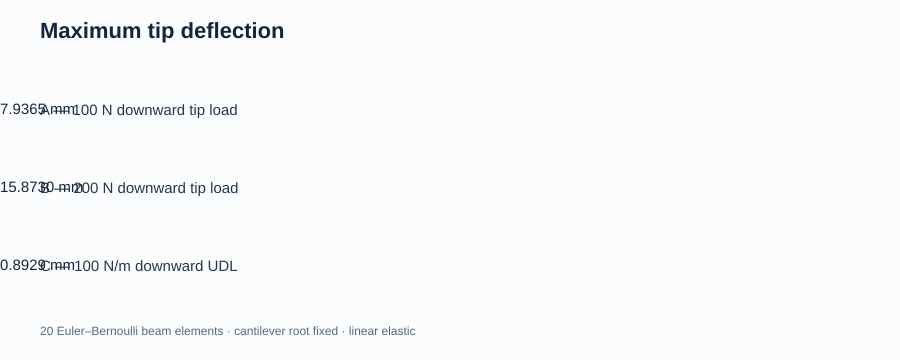
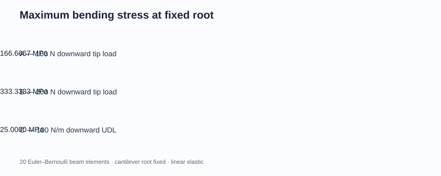

Rectangular beam: span 300 mm, width 30 mm, depth 6 mm. Isotropic linear-elastic steel: Young’s modulus 210,000 MPa, Poisson ratio assumed 0.30 (not used by the 1D bending element), nominal yield strength 250 MPa. Section area A = 180 mm²; second moment I = 540.0000 mm⁴; elastic section modulus Z = 180.0000 mm³.

At x = 0, the root is clamped: transverse displacement and rotation are fixed (w = 0, θ = 0). The free end at x = 300 mm has no applied displacement constraints. Downward loads are applied in the beam’s transverse direction:
Twenty two-node Euler–Bernoulli beam elements (21 nodes, 42 bending degrees of freedom) were assembled using the standard 4×4 elastic beam stiffness matrix. The clamped root degrees of freedom were eliminated and the reduced linear system was solved. Root bending stress is estimated by σ = Mmax/Z. Yield factor of safety is FoS = 250 MPa / σmax. Small-displacement, static, linear-elastic behavior is assumed; shear deformation, local stress concentrations, plasticity, self-weight, and contact are excluded.
| Case | Load | Tip deflection (mm) | Peak bending stress (MPa) | Yield FoS | Root moment (N·mm) |
|---|---|---|---|---|---|
| A — 100 N downward tip load | 100 N tip force | 7.9365 | 166.6667 | 1.5000 | 30000.0000 |
| B — 200 N downward tip load | 200 N tip force | 15.8730 | 333.3333 | 0.7500 | 60000.0000 |
| C — 100 N/m downward UDL | 100 N/m UDL | 0.8929 | 25.0000 | 10.0000 | 4500.0000 |


Closed-form cantilever values used for cross-check: tip force P gives δ = PL³/(3EI) and σ = PL/Z; full-span UDL q gives δ = qL⁴/(8EI) and σ = qL²/(2Z). The 20-element beam FE discretization reproduces these exact Euler–Bernoulli solutions to numerical precision for this prismatic, statically determinate beam.
Reproducibility files: fea_beam.js solver source, fea_results.csv numeric results, two SVG result figures, and cantilever_beam.CATScript to construct the corresponding 3D solid in CATIA V5. In CATIA, execute the macro then use Generative Structural Analysis (if licensed) to create a 3D solid analysis, clamp one end face, apply each of the three loading cases in turn, mesh, and solve for native CATIA screenshots.